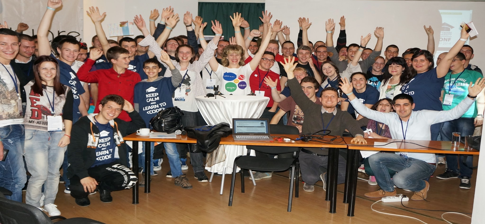

Битие на Софтуера
- В началото беше 0-та и освен нулата нямаше нищо и Наков реши не може да стои нулата сама и каза Наков: нека бъде 1-но!
- И като видя Наков , как хубаво си стоят една до друга 1-цата и 0-лата каза: от сега нататък докаде има процесор и платка вие ще се наричате битове!
- И видя Наков ,че на 0 и 1 им е скучно и каза множете се CTRL+C CTRL+V и битовете станаха байтове!
- И като видя как хубаво стоят байтовете Наков рече: редете и множете, и стрингове правете!
- Стрингове се редяха и Наков видя Хаоса в това и реши ,че не може така ,затова реши да ги подреди ,та да има смисъл и ето така създаде файла и програмата!
- И реши наков да обедини файлове и програми и създаде Наков платформата!
- Платформата трябваше да се употребява и да учи и да крепи ,бедни и богати, мало и голямо затова рече нека бъде Софтуерен Университет!
- И започна голямо преселение от всички краища в Софтуерния Университет, и 1-ци и 0-ли да редят и заедно да се веселят!
- 